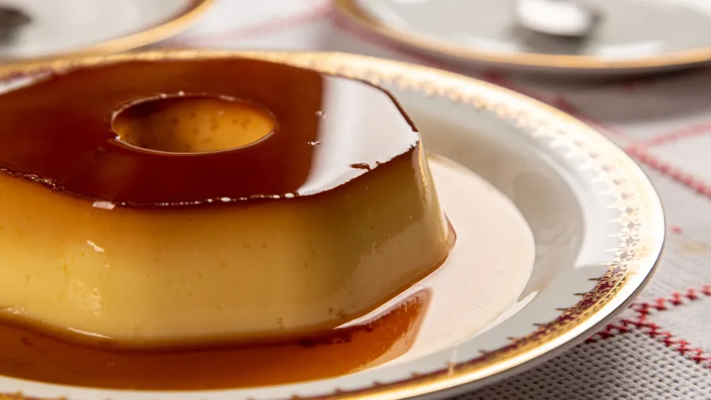

Origem, curiosidades e a receita clássica

O pudim nasceu em Portugal, nos conventos, onde as freiras transformavam gemas de ovo em sobremesas delicadas. Na Europa, o pudim era feito com leite fresco, ovos e açúcar, assado em formas simples e servido como sobremesa refinada.
Chegando ao Brasil, o pudim passou por uma grande adaptação. O leite condensado tornou o preparo mais cremoso e doce, simplificando a receita sem perder o sabor. A calda de caramelo ganhou destaque e a textura ficou mais firme, ideal para cortar em fatias perfeitas.
Com o tempo surgiram variações regionais: pudim de coco, pudim de pão, pudim de mandioca e até versões gourmet com chocolate ou frutas. Essa adaptação combina tradição portuguesa com criatividade e ingredientes brasileiros.